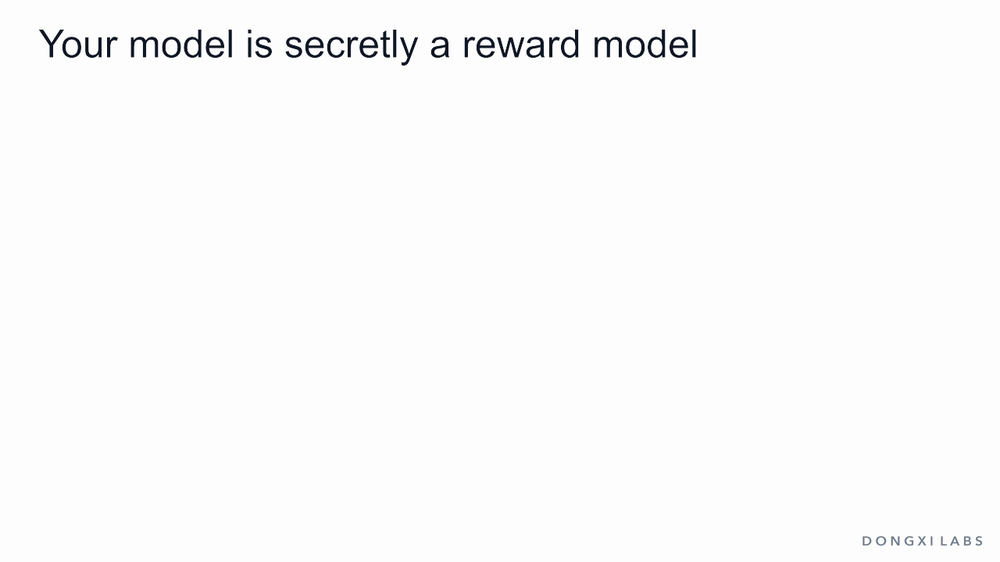
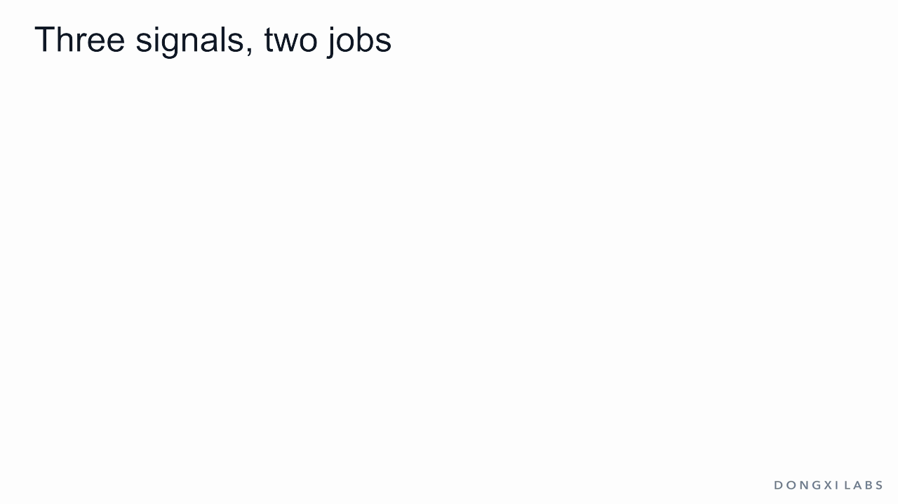
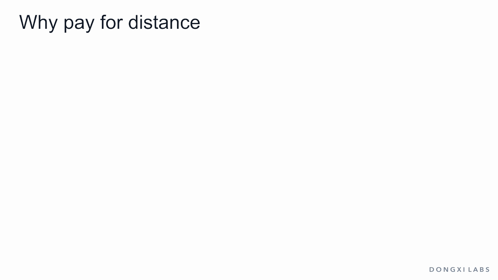
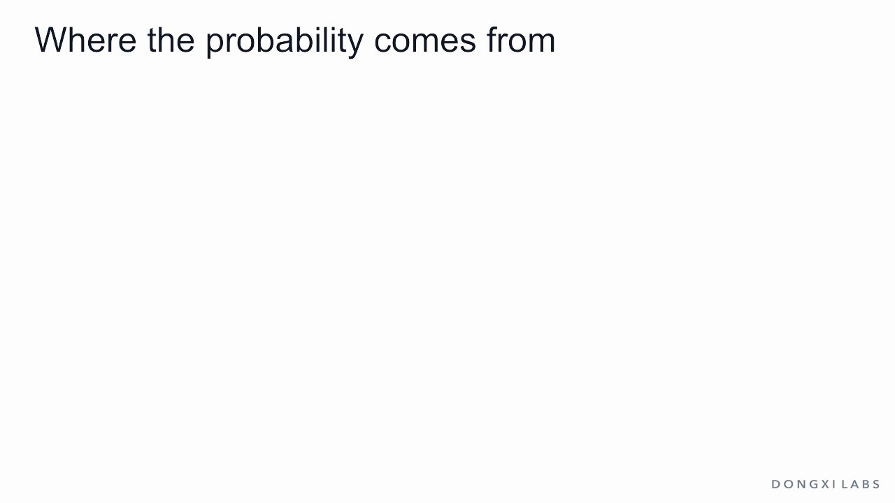

A model that scores its own answers
Your Language Model is Secretly a Reward Model
That line is the subtitle of a 2023 paper by Rafael Rafailov and colleagues at Stanford. The paper introduced DPO, direct preference optimization, and the subtitle states its main idea.
The reward-model article built a separate network: the body of an LLM with one score head on top, returning one number per answer. RL from human feedback (RLHF) then needs a second stage. The chat model writes answers, the reward model scores them, and RL changes the chat model. DPO needs no external reward model: the LLM itself is the reward model. How much it has raised or lowered an answer, compared with its starting point, is that answer's score.

In practice, keep a frozen copy of the starting model, the reference, and score every answer like this:
score = β × log(new share / reference share)
This score is called the implicit reward. It needs two probabilities and nothing else: no score head, no second network. Then take a pair of answers that a person compared, and apply the same Bradley–Terry loss a reward model uses.

Here is the egg question from the KL article. Asked How long should I boil an egg?, the reference gives five answers at these rates:
- Boil it until it's done. (vague): 40%
- About 10 minutes.: 25%
- A long paragraph that eventually says 10 minutes: 15%
- Soft-boiled 6–7 minutes, hard-boiled 10–12; then cold water so it peels easily. (the best answer): 12%
- 2 minutes gives a hard-boiled egg. (wrong): 8%
A person compares two answers and chooses the best answer over About 10 minutes. Take β = 1 and follow that one pair through three versions of the model:
- At the start, the model is a copy of the reference. Both scores are 0, the gap is 0, and the chance that the model's scores pick the chosen answer is 0.5. The loss is 0.693.
- After a small move, the best answer rises to 22%. Its score is log(0.22 / 0.12) = 0.606, and the other answer's score is still 0. The gap is 0.606, the chance is 0.647, and the loss is 0.435.
- At the best compromise from the KL article, the two answers have 39.5% and 30.3%. Their scores are 1.192 and 0.192. The gap is 1, the chance is 0.731, and the loss is 0.313.
Training lowers this loss over many such pairs. No answers are sampled, no reward model is trained, and there is no RL loop.

Why should a log-ratio behave like a reward? Why does this loss end at the same model that RL is aiming for? The first half of this article answers those questions, and it needs only the KL article. The second half follows the DPO loss: what it pushes, whether it reaches the right model, and what to watch on a real LLM. This is the seventh article in our post-training series. All probabilities and rewards in the egg example are invented for illustration; the arithmetic on them is exact.
The goal: one score for each model
A quick recap of KL. For each answer, divide the new share by the reference share and take the log. That is the log-ratio. Average the log-ratios over the new model's replies and you have KL: 0 when nothing changed, larger when more changed. The small move has KL 0.047.
RLHF gives every candidate model one score:
score = average reward − β × KL
The average reward is each share times that answer's reward, added up. Give the five answers rewards of 0, 1, 0.5, 2 and −1. β is the price of one unit of KL, chosen by whoever runs the training. With β = 1:
- Keep the reference: 0.485 − 0 = 0.485
- The small move: 0.685 − 0.047 = 0.638
- Always give the best answer: 2.000 − 2.120 = −0.120
- The best compromise: 1.136 − 0.328 = 0.808
No other model scores higher than the last line, and this article shows why. In symbols the score is written J = E[R] − β · KL(π ‖ π_ref). π (pi) is the model being trained, the policy, and E[R] is its average reward.
A normal RLHF run has three signals, and they do different jobs:
- Reward comes from a frozen reward model. It enters the update and says which way to go.
- KL is measured against the frozen reference. It enters the update and charges for distance.
- Gold is a signal training never sees: held-out human comparisons, benchmarks, or reading samples. It only judges checkpoints.
DPO changes the first two. Stored human pairs take the place of the reward model, and β and the reference go straight into one loss. Gold stays outside, as before.

Why pay for distance
Bring back the sixth answer from the KL article: Boil it 20 minutes, always, for food safety. Experts agree. The reference writes it 0.5% of the time, and the 2-minute answer drops to 7.5% to keep the total at 100%. The reward model rarely saw such answers and gives this one 3, the highest score. Its true value, the gold signal, is −2.
Suppose training maximizes reward with no price. The best model puts 100% on the highest score. Its reward is 3. Its gold value is −2, and the reference's was 0.48.
Now add the price with β = 1. The best model gives the confident wrong answer 4.3% and the real best answer 37.9%. Its reward is 1.22 and its gold value is 1.00. The reward fell, and the model improved.

The DPO paper gives the same reasons for the price. It keeps the model close to the answers on which the reward model is accurate, it preserves variety, and it prevents the model from collapsing onto a single high-scoring answer. The reference also knows a great deal that the reward model does not measure, and staying near it keeps that knowledge.
With a price on distance, training re-weights what the reference already says.
Why the reference is frozen
The price needs a fixed starting point. Suppose each step were compared with the model from the step before. Take the six answers and move in ten equal steps toward whatever the reward prefers. Each step costs at most 0.059 of KL against the previous model. After ten steps the distance from the start is 3.61, and the confident wrong answer has 69% of the replies. That is the over-optimized model from the end of the KL article.
With a frozen reference, that same model is charged 3.61. So the reference is a copy of the starting model, usually the one that came out of supervised fine-tuning (SFT). It gets no gradient and changes nothing during training. The only cost is an extra forward pass.
The best model: no move helps
Back to five answers. Which model has the highest score? There is a test: move a tiny share from one answer to another. If the score rises, the model is not at the top yet.
The test uses each answer's net value, the gain from giving that answer a little more share:
net value = reward − β × log-ratio
The reward is the gain and the log-ratio is the deduction: the higher an answer has been raised, the more it costs to raise it further.
The small move has net values 0.288, 1, 0.5, 1.394 and −1. Moving 0.01 from the vague answer (0.288) to the best answer (1.394) takes the score from 0.638 to 0.649, so this is not the top.
Keep moving share from low net values to high ones. The differences shrink until all five answers reach 0.808. From there, any move lowers the score.
At the best model, giving any answer a little more share gains nothing.
Call the shared net value c, and the best model follows:
log-ratio = (reward − c) / β
The inverse of log is a power of e (about 2.718). Removing the log gives:
new share = reference share × e^(reward / β) × one shared number
The shared number makes the shares add up to 1. So the recipe has three steps (β = 1):
- Multiply each reference share by e^reward: 0.400, 0.680, 0.247, 0.887 and 0.029.
- Add them: 2.243, called Z.
- Divide each by Z: 0.178, 0.303, 0.110, 0.395 and 0.013.
What is Z? After the multiplying, the five numbers add up to 2.243, so they cannot be shares yet. Shares must add up to 1, so each number is divided by that total. Z is that total. Papers call it the partition function.
The best answer goes from 12% to 39.5%, and the wrong answer from 8% to 1.3%. In symbols, with the star meaning the best model:
π*(y) = π_ref(y) · e^(R(y) / β) / Z
Every answer keeps some share, re-weighted by reward. A smaller β makes the re-weighting stronger.

Two points for later.
First, this is the solution for one prompt. A real LLM serves all prompts with one set of weights, so π* is a target that training approaches.
Second, Z adds up every possible answer. Five answers are easy. A real LLM has countless possible answers, so Z cannot be computed.
From the model back to the reward
Now work backward. Suppose you have only the reference and the best model, and you do not know the rewards.
Divide the shares for each answer and take the log: −0.808, 0.192, −0.308, 1.192 and −1.808.
The rewards are 0, 1, 0.5, 2 and −1. Each log-ratio is the reward minus 0.808.
Why? Take the best model's formula, divide by the reference share, take the log, and multiply by β:
β × log-ratio = reward − β × log Z
The left side is the implicit reward from the opening. The right side is the true reward minus a constant. The constant is the same for every answer. Here it is 0.808.
The constant contains Z, which a real LLM cannot compute. A comparison of two answers does not need it.
Call the constant c. Both answers subtract the same c, so it cancels in the gap:
(reward A − c) − (reward B − c) = reward A − reward B
The value of c has no effect on the gap. Bradley–Terry uses only the gap between two scores, so Z has no effect on the result.
On the egg example, the best answer against About 10 minutes:
- With the rewards: 2 − 1 = 1
- With the log-ratios: 1.192 − 0.192 = 1
Both scores drop by 0.808, the gap stays the same, and both give σ(1) = 0.731.

So the best model and the true reward predict the same human choices.
That gives the method: drop the reward, use β × log-ratio as the score, and fit the model to the choices directly.
The DPO paper derives it this way. It states: "We start with the same RL objective as prior work." That objective is the score from our second section.
The formula for π* came from earlier work. DPO rearranges it to express the reward through the policy, uses the fact that Z cancels in a comparison, and writes the loss.
In the paper's words, the result can "solve the standard RLHF problem with only a simple classification loss".
Each piece of the DPO loss has a source:
- β is the KL coefficient.
- The reference is the anchor of KL.
- The log-ratio is the term inside KL.
- The pairs and σ come from Bradley–Terry.
- The missing Z comes from taking a gap.
So DPO needs the KL penalty, even though it computes no KL during training. With no penalty, the best model has a share of 0 for four answers. The log of 0 does not exist, and there is no reward to work back to.
The result also rests on two assumptions:
- Human choices follow Bradley–Terry for some reward.
- The LLM is flexible enough to represent π*.
A policy trained on preferences carries its reward inside it, up to one constant that comparisons never see.
The DPO loss on one pair
A training example for DPO is one row, the same row a reward model trains on: a prompt, the chosen answer and the rejected answer. The steps for one row:
- Score the chosen answer: β × its log-ratio.
- Score the rejected answer the same way.
- Take the gap, chosen minus rejected. Call it m.
- Turn the gap into the chance that the scores pick the chosen answer: σ(m).
- The loss is −log σ(m).
σ is the sigmoid from the reward-model article. A gap of 0 gives 0.5, large positive gaps approach 1, and large negative gaps approach 0. The −log makes an unlikely outcome expensive:
- Gap −3, scores in the wrong order: loss 3.049
- Gap 0, no opinion yet: loss 0.693
- Gap 0.606: loss 0.435
- Gap 1: loss 0.313
- Gap 3, clearly right: loss 0.049
The loss never reaches 0, and that matters later. For a batch, average over the rows. In the paper's symbols:
L = −log σ( β · log[π(y_w) / π_ref(y_w)] − β · log[π(y_l) / π_ref(y_l)] )
y_w is the chosen answer (w for winner), and y_l is the rejected one. This is the loss of the reward-model article with one change: the score comes from the policy and the reference.
Only change counts here. The small move gives the chosen answer 22% and the rejected one 25%, and its gap is still positive, because it raised the chosen answer relative to the reference.

The push
How does this loss change the model? Use a nudge test: change one number by a small amount and watch the loss.
Start at gap 0, where the loss is 0.6931. Raise the gap by 0.01 and the loss becomes 0.6882. It fell 0.0049 for a nudge of 0.01, a slope of about −0.5. The exact slopes:
- From gap −3: slope −0.953
- From gap 0: slope −0.500
- From gap 1: slope −0.269
- From gap 3: slope −0.047
The slope's size is σ(−m), the push. Pairs in the wrong order get a strong push. Pairs already won get a weak one. The paper notes that this weight matters: a naive version without it can make the language model degenerate.
Gradient. A slope for one input is a derivative. A gradient is the list of slopes, one per input. With the gap as the only input, it is one number. For a real model it has one number per weight, so a 0.6-billion-parameter model has about 0.6 billion of them.
Learning rate. Training changes each number by the learning rate times its slope, in the direction that lowers the loss. Train our pair with a learning rate of 1:
- Gap 0, loss 0.693, push 0.500
- Gap 0.500, loss 0.474, push 0.378
- Gap 0.878, loss 0.348, push 0.294
- Gap 1.171, loss 0.270, push 0.237
- Gap 1.408, loss 0.219, push 0.197
The steps shrink as the pair becomes right, and they never stop completely.
The gap is built from two log-probabilities, so the push reaches both of them. It raises the chosen answer's log-probability and lowers the rejected answer's by equal amounts, each scaled by β. The reference receives nothing, because it is frozen.

Hyperparameter. β and the learning rate are hyperparameters: numbers you choose, which training never changes. They do different jobs, and this example separates them. Run the pair three times with plain gradient steps, choosing the learning rates (2, 1 and 0.5) so the first step is the same. The distance is how far the chosen answer's log-probability has risen:
- β = 0.5: 0.50 after one step, 2.26 after ten, 4.59 after a hundred
- β = 1: 0.50, 1.51, 2.65
- β = 2: 0.50, 0.95, 1.50
A larger β wins the pair after a smaller move, so the push fades sooner. The learning rate sets the speed. β sets how far the pair has to move. Optimizers such as Adam rescale each gradient, which removes most of β's effect on speed and leaves its effect on distance. The DPO paper's default settings were β = 0.1, a learning rate of 1e-6 and a batch of 64.
Where the probability comes from
Shares must add up to 1, so a raised answer has to take share from somewhere. To see where, use the simplest model possible: a table with one raw number, a logit, for each answer. Softmax turns the five logits into shares. Start the table at the reference.
With a learning rate of 1, the chosen answer's logit gets +0.5 and the rejected answer's gets −0.5. The other three logits get no push. One step gives:
- Vague: 40% to 40.8%
- About 10 minutes (rejected): 25% to 15.5%
- Long paragraph: 15% to 15.3%
- Best answer (chosen): 12% to 20.2%
- Wrong: 8% to 8.2%
The rejected answer lost 9.5 points and the chosen one gained 8.2. The rest went to the three answers outside the pair, because softmax rescales everything. The wrong answer went up. No pair mentioned it, so nothing pushed it down.

The gap between the two answers is now 1, the same gap as the best model. The shares are far from the best model: About 10 minutes has 15.5% against the target's 30.3%, and the wrong answer has 8.2% against 1.3%. One pair fixes the gap of one pair and leaves everything else open.
So the target needs pairs that cover all the answers. Does DPO then reach π*?
The ideal test
Test it where the answer is known. Use the table model, so any set of shares can be represented, and simulate the people. Each row picks two of the five answers at random, and the winner is drawn by Bradley–Terry from the true rewards. The training code sees only who won. It never sees a reward, Z or π*.
After 1,000 pairs, one simulated run gives these shares: 18.9%, 32.5%, 12.8%, 34.3% and 1.4%. The target is 17.8%, 30.3%, 11.0%, 39.5% and 1.3%. To compare, measure how much share would have to move to turn one set into the other. The reference is 0.33 from the target, and this run is 0.05 from it.
More pairs bring it closer. Averaged over eight simulated datasets, the distance is 0.38 with 10 pairs, 0.15 with 100, 0.04 with 1,000 and 0.01 with 10,000. It shrinks by about a factor of three for every tenfold increase in data, the usual rate for an average estimated from samples.
This test also gives two warnings.
Too few pairs. With 10 pairs, a pair of answers is often seen once, with one winner. The data then says that answer always wins, and the loss never reaches 0, so training keeps widening that gap for as long as it runs. In one such run the vague and wrong answers fell to 0% and the shares piled onto three answers. Real runs also make few passes: Tülu 2 trained its DPO models for three passes over the data.
β sets the distance. With ideal data, the gap in reward units does not depend on β. For the best answer against About 10 minutes it is 1. The log-ratio gap needed to show that preference is 1 / β:
- β = 4: log-ratio gap 0.25, KL 0.02
- β = 1: log-ratio gap 1, KL 0.33
- β = 0.1: log-ratio gap 10, KL 2.12
A smaller β moves the model further to express the same preference. DPO has the same dial as the score at the top of the article.
From answers to tokens
A real LLM has no list of answers. What is the log-probability of a reply?
As the KL article showed, a reply's probability is the product of its tokens' probabilities, so its log-probability is the sum of its tokens' log-probabilities. DPO counts the answer's tokens and the end-of-turn token, because stopping is part of the answer. The prompt's tokens are context and are never counted.
These totals are large and mostly reflect length. A 40-token reply might have a total near −40 and a 60-token reply near −60, with illustrative values of about −1 per token. A raw comparison would just prefer short answers. This is why DPO works with the change against the reference: each answer is compared with its own reference value, so most of the length effect is subtracted away.
One training row therefore takes four forward passes: the chosen and rejected answers through the model, and both again through the reference with no gradient. Everything else is the loss above. A variant used in Tülu 3 goes further and divides each answer's log-ratio by its token count, to reduce the remaining length bias.

What to watch on a real model
In a real LLM every answer shares the same weights, and a step for one pair moves all the others. The table model hid this. Five things are worth watching.
The first step. The model starts as a copy of the reference. Every gap is 0, so the loss must start at log 2 = 0.693 and the accuracy on pairs at 50%. Anything else is a bug.
Training pairs against held-out pairs. Pair accuracy rises faster on the training pairs than on pairs the model never saw, and the gap between the two curves shows it memorizing rows. This is the too-few-pairs warning on a real model.
Both probabilities, separately. The loss sees only the gap, and a gap can widen in three ways: chosen up and rejected down, both up, or both down. Take a constructed case. The best answer falls from 12% to 6%, About 10 minutes falls from 25% to 2.5%, and the rest goes to the other three, so the wrong answer rises from 8% to 11.6%. The gap is 1.609 and the loss is 0.182, better than the best model's 0.313, and the chosen answer has become half as likely.
This happens in real training, and it is called likelihood displacement. Razin and colleagues showed in 2024 that it can do harm: training a model to prefer No over Never can sharply raise the probability of Yes, and in one safety experiment the refusal rate of Llama-3-8B-Instruct fell from 74.4% to 33.4%. They trace it to pairs whose two answers look similar to the model. DPO is also sensitive to the learning rate: Tülu 2 reports needing 5e-7 for stable training.
KL. KL shaped the loss, but training neither measures it nor limits it directly. Measure it with the method from the KL article: let the model write replies, and average their log-ratios.
Gold. Pair accuracy is not gold. It says whether the model ranks two fixed answers the way an annotator did. A person using the model sees the replies it generates, so the real check is to generate replies on held-out prompts and judge those. The DPO paper judged generated replies with GPT-4, and left open how over-optimization appears in DPO.

A wider gap only says the chosen answer moved ahead of the rejected one. Check what the model now writes.
DPO has a limit of its own: it learns only from the pairs it is given and cannot try an answer of its own and get feedback during training. Its appeal is simplicity. Tülu 2 ran it on a 70-billion-parameter model, and the Tülu 3 recipe places it between SFT and RLVR.
Summary
- DPO scores each answer by the model's own change from a frozen reference: β × log-ratio, the implicit reward.
- It applies the reward model's Bradley–Terry loss to that score, on stored pairs. There is no separate reward model, sampling or RL loop.
- RLHF scores a model by average reward minus β × KL. The price keeps the model near answers where the reward can be trusted.
- The reference is frozen, so small steps cannot add up to an uncharged long trip.
- At the best model no small move helps. That gives the recipe: multiply by e^(reward / β), add to get Z, divide.
- Read backward, β × log-ratio is the reward minus one constant. A comparison cancels the constant, so Z is never needed.
- Each pair is pushed with strength σ(−m): hard when wrong, gently when already won.
- Only the pair's answers get a push. Reaching the best model takes pairs that cover all the answers.
- In an ideal test, DPO finds the best model from who-won records alone. With few pairs it overshoots, and β sets how far it moves.
- On a real model, watch held-out pairs, the chosen and rejected probabilities separately, KL measured from samples, and gold on generated replies.
Next in the series are the methods that do sample answers during training: PPO and GRPO, with rewards from a reward model or from a verifier.